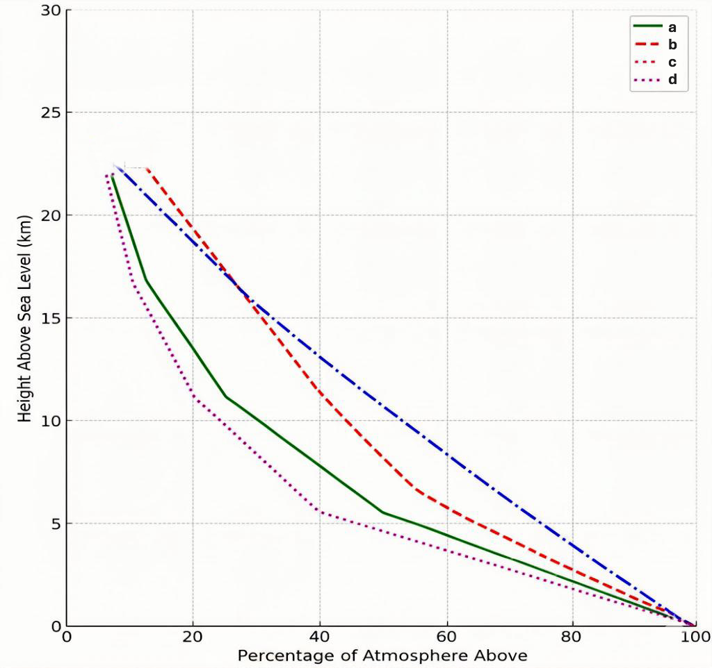
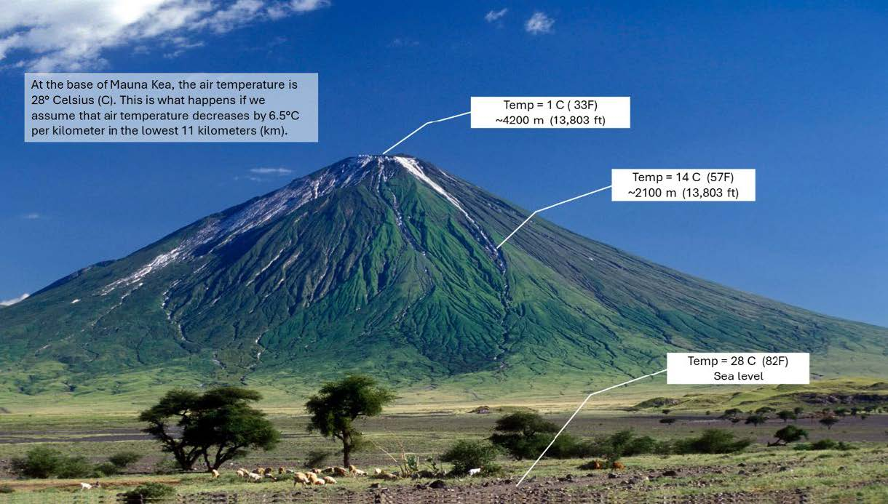
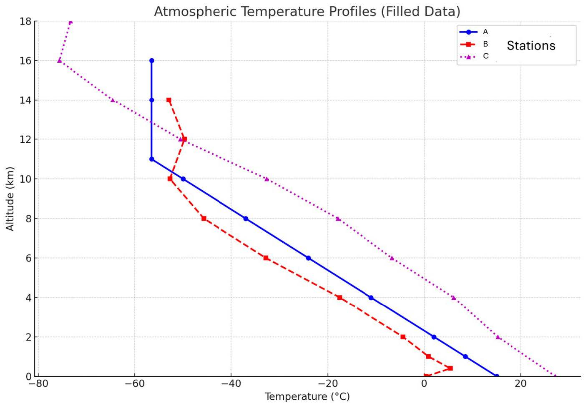

🌍 Lab 3: Temperature, Pressure, and Density in the Atmosphere
Atmospheric Structure and Properties (30 Points)
📋 For This Lab
Instructions
Complete all atmospheric calculations and analysis sections
Fill in tables with accurate numerical values
Monitor your progress using the progress bar at the top of the
page
Your work is automatically saved as you type
When complete, click
"Download file for Canvas Submission"
Locate the downloaded file
(Lab03_AtmosphericAnalysis.txt) and upload it to Canvas
💡 Tip: Use a calculator for precise
calculations. Pay attention to units and significant figures.
📚 Introduction
The Earth's atmosphere is a complex system where
temperature, pressure, and
density vary with altitude. Understanding these
relationships is fundamental to atmospheric science and weather
prediction.
In this lab, you will explore how atmospheric properties change
with height, calculate pressure at different altitudes, analyze
temperature profiles through the atmosphere, and synthesize your
understanding of atmospheric structure.
Part 1: Atmospheric Mass Distribution with Height
Key Concept: For every 5.6 km you ascend in the
atmosphere, there is approximately one-half of the atmospheric mass
remaining above that height.
Question 1: Complete the table below
(2 pts)
Using the rule that atmospheric mass halves every 5.6 km,
calculate the percentage of atmosphere remaining above each
height:
% Above
Height (km)
22.4
16.8
11.2
5.6
100%
Sea Level
Question 2: Select which curve accurately represents the data in
Question 1. (3 pts)

Figure 1: Four different curves showing height vs. percentage of
atmosphere above
Part 2: Barometric Pressure at Different Altitudes
Background: Barometric pressure reflects the weight
of the atmosphere above a point. At sea level, the pressure is
approximately 1000 millibars (mb). Since atmospheric mass at 5.6 km
is 50% of its sea-level value, the pressure at this height would be
approximately 500 mb.
Question 3: Estimate pressure and percentage of atmosphere
(6 pts total)
a. The height of a cruising airliner (11 km) is
mb with approximately
% of the atmosphere remaining above.
(2 pts)
b. The top of Mt. Everest (8.85 km) is
mb with approximately
% of the atmosphere remaining above.
(2 pts)
c. Denver, CO (1.6 km) is
mb with approximately
% of the atmosphere remaining above.
(2 pts)
Part 3: Atmospheric Lapse Rate
Lapse Rate Definition: The rate at which
temperature decreases with altitude. When averaged over all seasons,
air temperature is 15°C at Earth's surface and decreases by 6.5°C
per kilometer in the lowest 11 kilometers. This is known as the
average lapse rate or "standard atmosphere."

Figure 2: Temperature changes with altitude on Mauna Kea, Hawaii
Part 4: Atmospheric Temperature Profiles
The following chart shows three plots of temperature with altitude
in the atmosphere. One represents a cold day in Alaska, another a
warm day in the tropics, and the last one represents the standard
atmosphere.

Figure 3: Atmospheric Temperature Profiles for three different
stations (A-blue, B-red, C-magenta)
Questions 4-6: Surface and Upper Atmosphere Temperatures
(3 pts)
Question 4: Station
has the highest surface temperature.
(1 pt)
Question 5: Station
has the highest temperature at 10 km.
(1 pt)
Question 6: Station
has the highest temperature at 14 km.
(1 pt)
Inversion Layers: Layers in the atmosphere where
temperature increases with height (opposite of normal). This is
called a temperature inversion.
Question 7: Identify the inversion layer
(2 pts)
The
color plot has an inversion layer that starts at
km and ends at
km.
Tropopause: The boundary that marks the top of the
troposphere, defined as the level where temperature stops decreasing
with height.
Questions 8-10: Tropopause Identification
(6 pts)
Question 8: The tropopause occurs at
km at a temperature of
°C for the red station. (2 pts)
Question 9: The tropopause occurs at
km at a temperature of
°C for the blue station. (2 pts)
Question 10: The tropopause occurs at
km at a temperature of
°C for the magenta station. (2 pts)
Questions 11-12: Location Identification
(2 pts)
Question 11: The
color plot represents Alaska. (1 pt)
Question 12: The
color plot represents the tropics.
(1 pt)